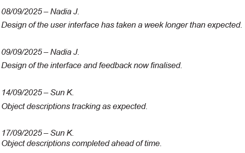

Unit 4 AOS1 – Development and Evaluation
Note: The following items in the study design are not covered here:
- Characteristics of data types, data structure and data sources for input, storage and output - See U3AOS1
- Validation techniques - See U3AOS1
These points were covered in the previous Area of Study.
Characteristics of efficient and effective solutions
User-centered design is a process whereby users and their needs are considered with the highest priority throughout the problem solving methodology. It involves the end users (agents, tenants, owners and head office staff) in every phase of development (through interviews, design and beta testing), thus allowing the design team to gather feedback on the application early.
- Efficiency example - such as faster workflow or a reduction in cost.
- Effectiveness example - such as fewer errors or clearer feedback.
Clear and concise code, code that is clear to understand and written concisely, so not verbose.
Detailed internal documentation, including detailed internal documentation in solutions.
Features of a programming language
(local and global variables and constants, data types, instructions and control structures (sequence, selection, iteration/repetition), arithmetic, logical and conditional operators, graphical user interfaces (GUIs), functions and methods, classes and objects all in U3AOS1)
Access modifiers
| Public | Attributes/properties are accessible from anywhere, even from outside the scope of the class, but only with the object reference. |
| Protected | Attributes/properties can be accessed within the class and its child class only, nowhere else. |
| Private | Attributes/properties can be accessed within the class itself. It prevents access from outside of the class, even with the reference of the class instance. |
Definitions taken from tutorialspoint
Established and innovative approaches to software development
The use of code repositories
Code repositories play a key role in software development, facilitating version control, and fostering collaboration and transparency.
Code repositories also allow developers to further develop existing functionality or include new functionality or features, without affecting the main codebase. Changes to code are then merged after testing and review.
Examples of code repositories include, but are not limited to:
- Git
- GitHub
- BitBucket
- SourceForge
Application programming interfaces (APIs) and libraries
APIs
APIs are interfaces that allow different systems and solutions to interact and communicate with each other seamlessly.
Examples of established and innovative approaches to software development with APIs include, but are not limited to, REST, SOAP, Operating system APIs, GraphQL, webhooks, serverless APIs and API gateways.
Libraries
Libraries are collections of pre-written code that developers can reuse and reference to perform specific tasks and functions. They enable developers to focus on developing their solution, whilst relying on libraries for common tasks.
Most programming languages come with standard libraries for input/output and data manipulation, and there are also open-source third-party libraries (such as NumPy) available.
Examples of established and innovative approaches to software development with libraries include, but are not limited to, modularisation, micro-libraries, AI-generated libraries, and community-driven libraries.
Challenges that arise from the use of both APIs and libraries include:
- complexity
- dependencies on API or libraries
- security risks that arise from APIs and outdated libraries
- versioning and compatibility.
Artificial intelligence-based (AI) assistants
AI-based assistants are increasingly becoming integrated into development environments. They utilise a combination of artificial intelligence, natural language processing and machine learning to observe developer actions and behaviours, as well as respond to prompts from developers.
The benefits of using AI-based assistants include:
- increased productivity and efficiency
- potential to support problem-solving and innovation
- reduced development costs
- code generation and suggestions
- automated debugging and testing, including automated generation of test data and test cases
- automated generation, maintenance and improvement of internal documentation.
The challenges that developers should be aware of when using AI-based assistants include:
- lack of accuracy and context awareness
- over-reliance on AI-assistants
- cost of integration
- accidental introduction of security vulnerabilities
- copyright and intellectual property theft
- bias in training data
- environmental impact.
Examples of AI-based assistants include, but are not limited to GitHub Copilot, Tabnine, Synk, TensorFlow, Codeium.
Debugging and alpha testing techniques
Alpha testing is a testing phase that checks whether modules or solutions meet all requirements and function as expected. Alpha testing is carried out by developers, independent testers or high-level users in a development or testing environment throughout the development phase.
Breakpoints - See U3AOS1
Commenting out code - Code can be commented out so that it does not run, this allows you to see the code running without specific lines of code. This can be useful to see if a specific line is causing an issue.
Relevant test data - Should mimic actual input data for an accurate test of specific behaviour.
Test cases comparing expected and actual output in testing tables - See U3AOS1
Strategies for conducting beta testing
Beta testing strategies consist of:
- How individuals would be selected from potential users
- What will be tested i.e. testing scenarios
- What data will be collected from the tests
- Beta testing is a testing phase, during development, that checks whether solutions meet all requirements, function as expected, are stable and are usable by intended user groups.
- Beta testing is performed in a development, testing or production environment with hardware identical (or similar) to that on which it will be implemented on by users of the solution.
- Feedback from beta testing can be used to recommend or make modifications to modules or solutions.
Construction of a testing plan and test scenarios
- Test plan - contains various aspects regarding the beta testing
- For our SAT purposes we are including:
- Potential users, outline the potential users for beta testing and explain why they have been selected
- Components to be tested, sections of the software solution which will be in the beta testing. Needs to cover:
- Appearance
- Functionality
- Functional and non-functional requirements
- Test scenarios - high level statements which describe what will be tested i.e. ‘The test will examine how the property owners respond as they login and retrieve the latest inspection report for one of their properties’ (2025 exam). Needs to cover:
- Same as components above
- Relevant characteristics of the user experience
- Result collection, how are the results being collected?
- For our SAT purposes we are including:
Observation of testing scenarios
- Should be done with a variety of different data collection methods
- Should be done to help identify errors and issues in software
Documentation of test results
- Results captured should be documented in order to identify errors and issues.
Features of evaluation strategies
Evaluation criteria - See U3AOS2
Time frame
- When should the evaluation be implemented?
- Is this only done when the development is finished or is there a longer term plan for the evaluation strategy? Will vary from project to project
- Allow for time to collect results and implement changes when iterating
Responsibility
- All tasks in the evaluation process should be assigned to an individuals
- These individuals could be internal, external evaluators, stakeholders etc.
Techniques for applying evaluation criteria
- Use the evaluation criteria to determine how the solution has met requirements, needs or opportunities. Discuss in terms of efficiency and effectiveness of the solution.
- Evaluation criteria were already written in the Design stage.
- To apply the criteria you should use a structured approach such as,
| Criteria | Strategy |
| The app loads within 2 seconds | Get Tom to check the load time for the app 10 times this week, at a variety of days and times, and on different devices. He should record the times and report the number of times that the app takes more than 2 seconds. |
| 98% of customers received the items they ordered. | Have Kate call a randomly chosen sample of 20 customers. Count the number of customers who received their order, convert this to a percentage and compare this to the 98% value. |
Factors that influence the effectiveness of project plans
Scope creep is when additional requirements are added increasing the scope of the project, without considering the impacts of time, resources etc.
Personnel changes are when staff change on the project, which can lead to additional time to complete handover between staff.
Technical issues, this could be hardware or software issues which impact how effective the plan is.
Techniques for recording the progress of projects
While a project is being implemented, a development team will need to keep track of progress.
The 4 techniques in the Study Design for this are:
| Adjustments to tasks | Changing what is to be done (tasks) |
| Adjustments to timeframes | Moving deadlines or finding ways to speed up tasks |
| Annotations to project plans | Writing over and commenting on an existing project plan |
| Monitoring and documenting progress using logs/journals | Keeping a (daily/weekly?) diary of what has happened and what is underway.  2025 exam |
Past exam questions for this topic have been phrased as “describe 2 ways to record the progress of projects”.
Techniques for assessing the effectiveness of a project plan
Project plan (using Gantt chart)
Reviewing the number of changes made to the project plan during the project
- A large number of changes may suggest there were issues with the planning or there were many variables throughout the process
The reason changes were necessary
- What factors influenced the project plan?
The impact of change on the completion of the project
- What was the overall impact on the project, was it still on time? Was it delayed? Was it more expensive?
PRIOR TO 2025 STUDY DESIGN CONTENT
Comparing storage media
The exam appears to compare access speeds between:
- RAM vs. “Permanent storage” E.g. USB hard drive, text files
- RAM is faster to read and write
- Local (i.e. on your device) vs Network storage (Cloud).
- Local is faster to read and write
Comparing transmission technologies
The exam has in the past asked to compare:
- Cost and speed, for wired vs wireless networks
The 2020 exam contained a question asking for a math calculation:
- “If a 5 megabyte file is uploaded through a connection at 20 megabits a second, how long will it take?”
- Answering this relies on knowing that there are 8 bits in a byte.
Comparing different ways to organise files
From 2022 Exam Report:
- “Reorganise content into clearly named (hierarchical) folders
- Keep dummy and real data separate”
Usability testing
Techniques
Two techniques for usability testing are:
- User testing: Get the users to perform tasks in the software solution.
- This could be scripted (get the user to do a specific set of actions) and/or unscripted (let the user play around on their own initiative).
- The advantage of a scripted test is that the user will definitely test an area you would like them to look at.
- The advantage of an unscripted test is that it may reveal an unexpected use case, as the user tries to do something that was not anticipated.
- Often when the user does this test, they are watched by a developer to record what is happening.
- Feedback: Users respond to the test they have just done.
- This feedback could be provided as e.g. a survey and/or an interview.
The 2019 Exam Report stated: “Usability testing proposals require both testing to occur and feedback to be provided to those testing solutions.”
Examples of high-scoring responses on the Exam
This is an example for “propose a usability test that Ryan and Jessica could get Rosie and Andrew to do”:
| 2019 Q14 Case Study | “Ryan and Jessica could get Rosie and Andrew to test the program by attempting to view their investments and then making an enquiry to their Portfolio Manager using the app. They will then complete a survey rating their experience and providing feedback as to what can be improved on.” |
Ways of reporting results
It is unclear what the exam requires here.